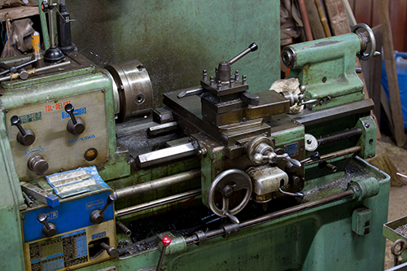

エネルギー機械コースは様々な機械やソフト、物理学を使って学んでいます。
様々な工作機械を使って製品を制作しています。
CADソフトを使って様々な製品の設計を行っている。「CAD」とは 「キャド」と読みます。 Computer Aided Designの略で、コンピュータ支援による設計という意味を持ち、コンピュータ上で設計や製図を行うツールです。 2次元の平面図を作成する2D CADと、立体像のモデリングで曲面や複雑な形状も可視化できる3D CADがあります。
Mコースでは様々なCADを使っているがその一例として以下に添付されているCADのソフトを使っている。
https://www.autodesk.com/jp/campaigns/design-now
このソフトを使って次のような製品を設計した。
Mコースでは専門科目として様々な物理学を学びます。
専門分野は物理が特に多いため、物理が得意な生徒や好きな生徒にとってはおすすめです。又、授業で学んだ物理は実習でも使うためとても重要です。
Mコースについてもっと知りたければ高専公式ホームページをご覧ください。
https://www.ct.omu.ac.jp/